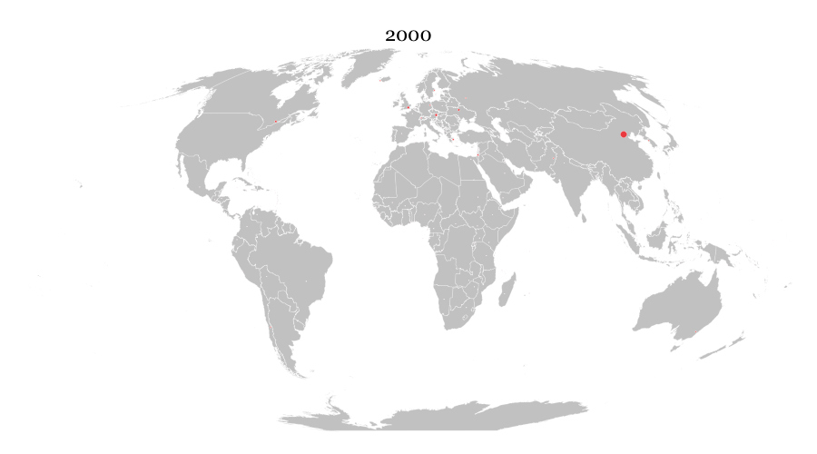

Chinese domination of EB-5 visa programme
The EB-5 immigrant visa is a type of visa that makes it possible for foreign investors to become permanent residents of the United States. Also known as the “rich visa”, It was created through the Immigration Act of 1990. Successful applicants invest $500,000 or $1 million to finance a business that will employ at least 10 Americans.
To date, tens of thousands of people from different parts of the world have got the visa. About 80 per cent of these investors come from four countries: China, South Korea, Taiwan and the United Kingdom. But the Chinese get the most -- by far. In some years, its nationals got many times the number of EB-5 visas all other countries got combined. For example, in 2014, Chinese nationals got 85% of the 10,692 EB-5 visas issued that year.
My project looks at how dominant China has been in the acquiring of EB-5 visas, using data from 2000 to 2017.
This is important at this time because Congress is supposed to vote on whether or not to extend the EB-5 visa programme.
 2.png)
 2.png)